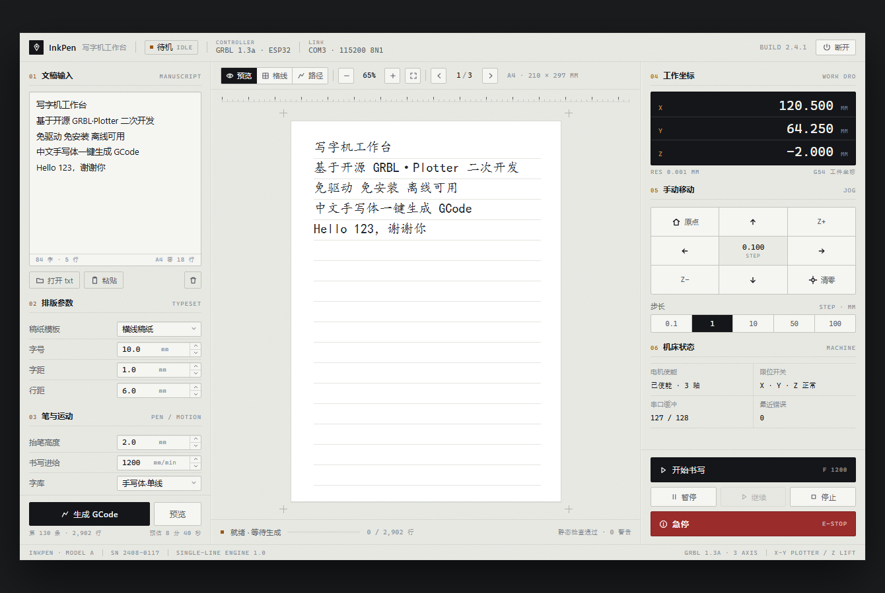
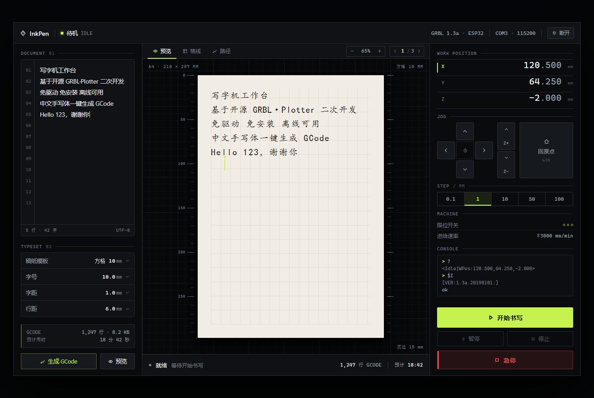
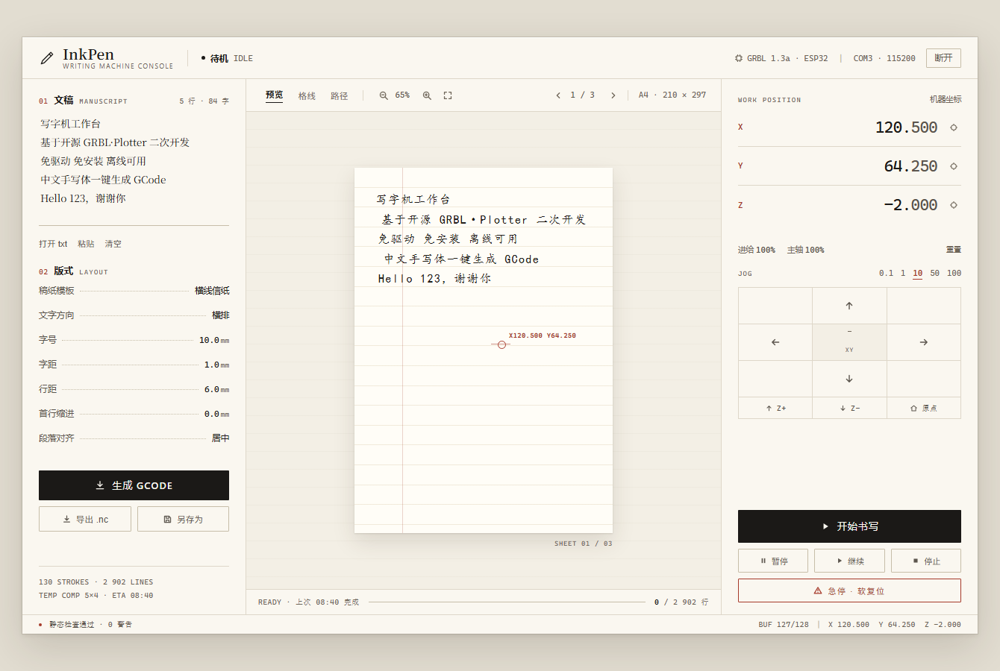

三案使用完全相同的内容与信息架构（1280×800，左文稿、中纸面、右控制），只替换视觉语言。 这样比较的是「贵不贵」，而不是「功能多不多」。三案由三个设计角色并行产出，我做交叉评审与终稿合成。

把界面当成一块阳极氧化铝的设备面板。用丝印标签、刻度、发丝线做结构，坐标读数做成一块反白窗。它不像软件，像随机器一起出厂的东西。

近黑机箱里一块发亮的纸。文稿带行号，右侧挂一个真实控制台，把「GRBL 原生」这件事直接摆在台面上。辨识度最高，也最容易被误读成开发者工具。

这台机器的产物是纸上的墨迹，所以视觉母题不借机床，借文具与印刷：暖白纸、墨块按钮、稿纸的朱砂边线、点线引导的印刷表格。零阴影、零卡片。
评分不是喜好投票，是四个能被追问的问题：像不像一台贵的设备、会不会被记住、用三个月烦不烦、在 GDI+ 里做得出来吗。
| 维度 | A 仪器 | B 暗场 | C 纸墨 | 判据 |
|---|---|---|---|---|
| 专业感 像不像一台贵设备 |
9 | 8 | 7 | A 的反白读数窗 + 丝印标签最接近真机面板；C 高级但更像文具品牌官网 |
| 辨识度 会不会被记住 |
6 | 8 | 9 | C 的稿纸边线与墨块按钮别人抄不走；A 稳妥但同质化风险高 |
| 耐看度 用三个月烦不烦 |
9 | 6 | 9 | 暗底 + 荧光长期看会累，尤其在车间强光下；B 的荧光绿面积已超过 3% |
| 与产品契合 写字机，不是数控铣床 |
7 | 6 | 10 | B 的行号与控制台把「写字」讲成了「写代码」，对目标用户是噪音 |
| GDI+ 实现成本 | 中 | 高 | 低 | 暗底细字在 GDI+ 上抗锯齿会发糊；C 全是 1px 线与实心块，最稳 |
| 主要风险 | 偏闷，缺一个提亮焦点 | 荧光过量会被读成「黑客主题」 | 不够硬朗，可能显得太软 | 三条风险都能在合成时对冲 |
你要的「GRBL 那种好看」，本质不是暗色也不是终端感，而是克制：颜色少到能数清、圆角小到看不见、结构全靠 1px 线与留白撑、数字必须等宽。A 用最少的修辞把这件事说清楚了，而且它的反白读数窗是三条里唯一「像真机器」的东西。
但 A 有两个问题：一是画布偏亮偏平，纸张跳不出来；二是通篇没有一个视觉落点，看久了发闷。C 的稿纸朱砂边线和墨块按钮刚好补这两口气——它们不增加颜色数量，只是把朱砂用在该用的地方。B 唯一值得拿的是纸面对暗场的强反差，把它翻译成亮色语境，就是「画布压深一档，纸留白」。
所以终稿不是三选一，是 A + C 的边线 + B 的反差 − B 的荧光。下面三处是我这一刀落下的地方。
中栏底从 #EEEFEA 压到 #E1E2DA，纸保持 #FFFDF7。差值拉大后纸张自己会跳出来，不需要加任何阴影。
把 C 的稿纸边线搬过来，但只画在纸内、透明度 22%，不进任何 UI 控件。整屏唯一的暖色被锁在「作品」里，界面反而更冷更硬。
我先把「开始书写」改成朱砂实心，一屏两个红按钮立刻互相抵消，急停不再突出，又改回墨块。屏幕上唯一亮的是纸，唯一黑的是墨，唯一红的是纸上那道边线和急停。